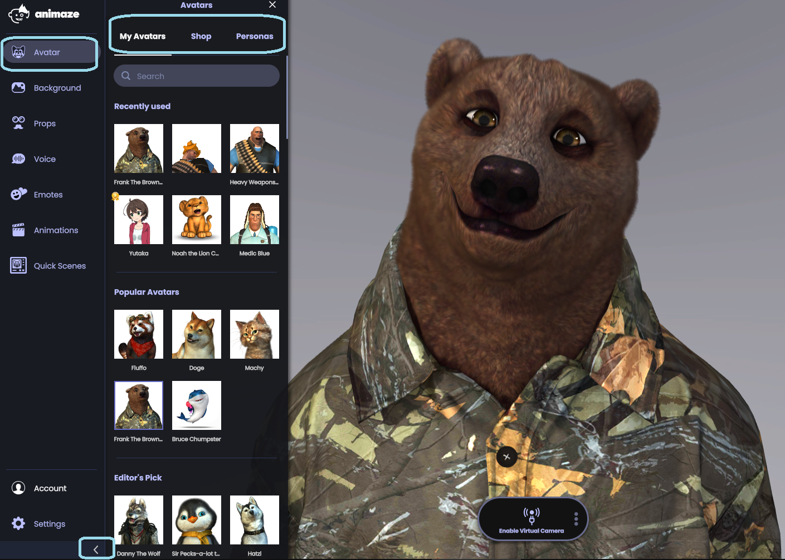
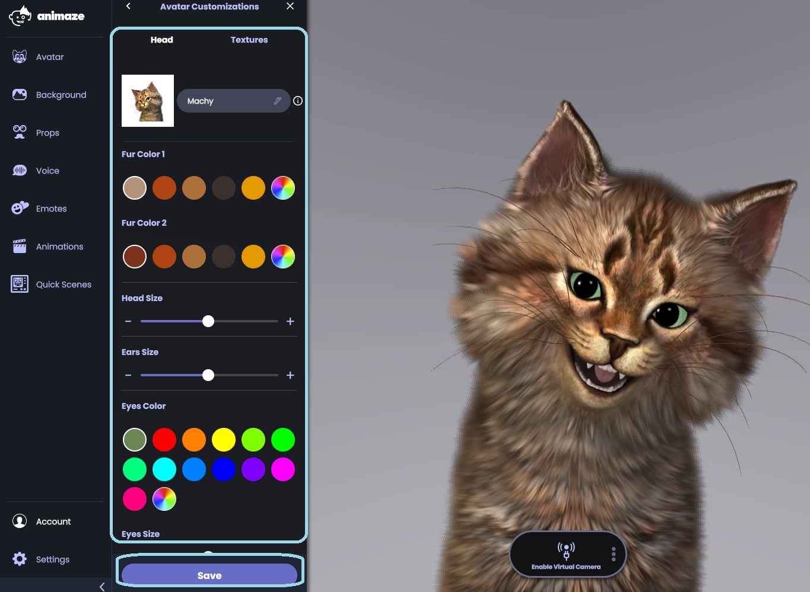

アバターを変更するにはどうすればよいですか?
Animazeアプリを起動し、「アバター」のアイコンをクリックします(左のUIの最初のボタンです)

ここから、「自分のアバター」にあるアバターから閲覧、ショップで新しいアバターを購入、ペルソナセクションで自分のキャラクターを作成ができます。
変更を加えたいアバターを見つけたら、それをクリックすると、メイン画面に読み込みが始まります。ここで、テクスチャーや色など、アバターのカスタマイズを行う時間を取ることができます。満足のいく外見が出来上がったら、「保存」ボタンをクリックしましょう！

新しいアバターとロックする準備をしましょう！